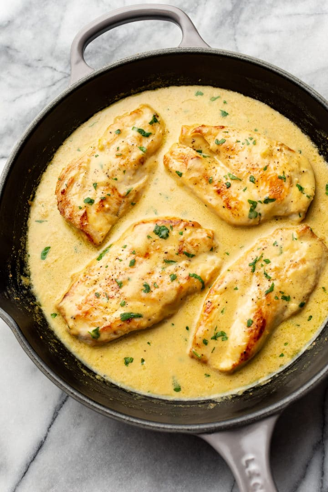

Zesty Lemon Pepper Chicken

A simple, healthy, and zesty meal sure to leave everyone full and smiling after dinner!
If you are looking for a main course with a delicious and unique citrus flavor, this is the dish for you!
Ingredients
- 2 halved chicken breasts
- Salt to taste
- 1 tablespoon olive oil
- 2 tablespoons butter
- 2 cloves garlic
- 1 tablespoon flour
- 2/3 cup chicken broth
- 1/2 cup heavy whipping cream
- 1 tablespoon lemon pepper seasoning
Step by step instructions
Follow the simple step by step instructions below to create your culinary masterpiece!
- Half the 2 chicken breasts so that there 4 thinner pieces
- Salt the 4 pieces of chicken
- Add oil and 1 tablespoon of butter to a skillet over med-high heat. Let the pan heat for a few minutes
- Sear the chicken for 5 minutes per side, transfer to a plate when finished
- Add 1 tablespoon of butter to the pan, allow it to melt
- Add the garlic and flour to the pan. sitr gently for 1 minute
- Add chicken broth, heavy cream, and lemon pepper seasoning to the pan. Whisk for 1 minute or until flour disolves
- Add chicken and juices from plate to pan, cooking for 5 minutes *Reduce heat if sauces is boiling too much*
- Season with salt and pepper and serve
- Enjoy!